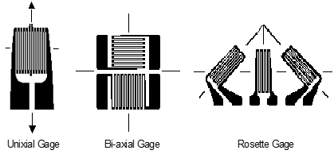

9 Material Strength
Abbreviations
| \(A\) | cross-sectional area \(\left[\text{ft}^2\right]\) |
| \(\mathrm{DLL}\) | design load limit |
| \(E\) | modulus of elasticity or Young’s Modulus \(\left[\frac{\text{lb}}{\text{ft}^2}\right]\) |
| \(e\) | strain (non-dimensional) |
| \(\mathrm{EK}\) | gage factor |
| \(\mathrm{GW}\) | gross weight |
| \(\mathrm{KU}\) | effective gust velocity \(\left[\frac{\text{ft}}{\text{sec}}\right]\) |
| \(L\) | length \(\left[\text{ft}\right]\) |
| \(L\) | lift force |
| \(N_{zb}\) | normal load factor, along aircraft z-axis |
| \(P\) | applied load \(\left[\text{lb}\right]\) |
| \(R\) | unstrained resistance |
| \(\Delta R\) | change in resistance due to load |
| \(S\) | wing area \(\left[\text{ft}^2\right]\) |
| \(V\) | flight speed |
| \(V_e\) | equivalent airspeed |
| \(V_s\) | stall speed |
| \(W\) | aircraft weight |
| \(\frac{W}{S}\) | wing loading |
| \(\sigma\) | air density \(\left[\frac{\text{slugs}}{\text{ft}^3}\right]\) |
| \(\sigma\) | stress \(\left[\frac{\text{lb}}{\text{ft}^2}\right]\) |
| \(\nu\) | Poisson’s ratio |
9.1 Loads Terminology
| Annealing | A heat treatment that eliminates the effects of cold working. |
| Brittleness | Measure of a material’s lack of ductility (by one definition breakage at five percent or less strain implies brittleness). |
| Cold Working | Deformation of a metal below its recrystallization temp., thereby strengthening and reshaping it. |
| Creep Rate | The rate at which a material continues to stretch when stress is applied at high temperature. |
| Design Load Limit | Maximum loads expected in normal service. |
| Ductility | Ability of a material to deform without breaking. |
| Durability | Ability to resist cracking, corrosion, thermal degradation, delamination, wear, and the effects of foreign object damage over time. |
| Elastic Deformation | Deformation of the material that is recovered when the applied load is removed. |
| Elasticity | Ability of a material to return to its undeformed shape after all loads have been removed. |
| Endurance Limit | The stress below which a material will not fail in a fatigue test. |
| Factor of Safety | Ratio of the predicted failure stress to the maximum stress anticipated in normal operation (\(\mathrm{DLL}\) ). For aircraft, the Factor of Safety is typically 1.5 \(\mathrm{DLL}\) . |
| Fatigue | The failure of a material when subjected to repeated loads less than the ultimate sustainable load. This effect is presented in an \(S-N\) diagram such as  |
| Fatigue Life | The number of cycles at a particular stress before a material fails by fatigue. |
| Hardness | Resistance to plastic deformation resulting from impact loads. |
| Impact Energy | The energy required to fracture a specimen when the load is suddenly applied. |
| Limit Stress | The maximum stress where the Modulus of Elasticity remains constant (proportional limit). |
| Margin of Safety | Any load-bearing capability greater that the ultimate load, calculated as \(\frac{\text{Failure load as a factor of } \mathrm{DLL}}{1.5 \mathrm{ DLL}} - 1\) |
| Notch Sensitivity | Measure the effect of a notch on impact energy |
| Plastic Deformation | Permanent deformation of a material applied load. Plasticity Material deformation characteristics beyond its elastic limit. |
| Resilience | A measure of the amount of energy a material can absorb elastically in a unit volume of the material. |
| Rupture Time | The time required for a specimen to fail by creep at a particular temperature and stress. |
| Stiffness | A qualitative of the elastic deformation produced. |
| Strain (\(e\) ) | The deformation of a material under an applied load. |
| Strength | Ability to withstand external loads without failure. |
| Stress (\(\sigma\) ) | The ability of a material to react a force distributed over some area. |
| Tempering | A low-temperature heat treatment which reduces hardness. |
| Tensile Strength | The stress that corresponds to the maximum load in a tensile test. |
| Thermal Stress | Stress resulting from expansion (strain) of a material subjected to heating. |
| Toughness | Total energy absorbed before failure occurs (area under the stress-strain curve). |
| Transition | Temperature The temperature below which a material behaves in a brittle manner in an impact test. |
| True Strain | The actual strain produces when a load is applied. |
| Ultimate Stress | The stress point at which additional load cannot be reacted. |
| Wing Loading | Aircraft weight per wing area, \(\frac{W}{S}\) , a ready measure of air loads for steady level flight. |
| Yield Stress | The stress applied to a material that just causes permanent plastic deformation. |
9.2 Material Stress & Strain
Stress (\(\sigma\) ) is the ability of a material to react a force distributed over some area. In the simple axial load case this can be presented as
\[\begin{equation*} \sigma = \frac{P}{A} \end{equation*}\]
\[\begin{align} \text{where } \sigma &= \text{the applied axial load} \\ A &= \text{cross-sectional area over which the load is applied} \\ \end{align}\]
Strain (\(e\)) is the deformation of a material under an applied load. In the basic form this can be presented as
\[\begin{equation*} e = \frac{\Delta L}{L} \end{equation*}\]
where \(\Delta L\) is the change in dimension due to some load, and \(L\) is the original dimension
The stress-strain relationship is linear (proportional) for a large percentage of the applied load to the maximum, as expressed by the Modulus of Elasticity (Young’s Modulus)
\[\begin{equation*} E = \frac{\sigma}{e} \end{equation*}\]
A typical stress & strain relationship for a material is illustrated as

9.3 V-n Diagram
Flight Path Normal Load Factor \(\left(N_{zw} \right)\) can be expressed during level flight, as
\begin{equation*}
\[\begin{align} N_{zw} &= \frac{1}{\cos \phi} = \frac{L}{W} \\ \text{where } C_L &= \text{lift coefficient} \\ F_n &= \text{net thrust} \\ L &= \text{lift force} = \text{wing lift} + \text{thrust lift} = C_L qS + F_n \sin \alpha_F \\ q &= \text{dynamic pressure} \\ S &= \text{wing area} \\ W &= \text{gross weight} \\ \alpha_F &= \text{incidence angle between thrust line and relative wind} \\ \phi &= \text{angle of bank} \end{align}\]
Body Axis Normal Load Factor \(\left(N_{zb} \right)\) is calculated as
\begin{equation*}
\[\begin{align} N_{zb} &= \frac{N_{zw} - N_{xb} \sin \alpha}{\cos \alpha} \\ \text{where } N_{xb} &= \text{load factor along aircraft body x-axis} \\ \alpha &= \text{angle of attack} \\ \end{align}\]
For the simplified case of negligible thrust lift, the maximum achievable \(N_{zb}\) at any flight speed can be calculated as
\begin{equation*}
\[\begin{align} N_{zb} &= \left( \frac{V}{V_s} \right)^2 \\ \text{where } &\text{both speeds must be the same units} \\ &\text{(i.e., true, equivalent, calibrated)} \\ V &= \text{flight airspeed} \\ V_s &= \text{stall airspeed} \\ \end{align}\]
A general normal load flight envelope (V-n diagram) would appear as
- The envelope typically varies with:
- asymmetric loading
- aircraft configuration
- for air loads other than along the normal axis
- and other structural, system, and safety considerations.

- It is frequently desirable to correct measured (test) \(N_{zb}\) data to a standard weight or design gross weight ( \(\mathrm{GW}\) ) using the relationship
\begin{equation*}
\[\begin{align} N_{zb} &= N_{zw_{\text{test}}} \frac{W_t}{W_s} \\ \text{where } W_t &= \text{test weight} \\ W_s &= \text{standard weight} \\ \end{align}\]
- The increase in load factor due to a vertical gust \(\Delta n\) is calculated as
\begin{equation*}
\[\begin{align} \Delta n &= \frac{0.155 m V_e \left( \mathrm{KU} \right) }{\frac{W}{S}} \\ \text{where } m &= \text{slope of } C_{L_{\alpha}} \text{ curve} \\ V_e &= \text{equivalent airspeed (knots)} \\ \mathrm{KU} &= \text{effective gust velocity (fps)} \\ \frac{W}{S} &= \text{wing loading (psf)} \\ \end{align}\]
9.4 Strain Gages
The three strain gage configurations most commonly used are

Strain \(\left( e \right)\) is measured using the electrical resistance measured via the strain gage in a material subject to load. For the uniaxial gauge
\begin{equation*}
\[\begin{align} K &= \frac{ \left( \frac{\Delta R}{R} \right) }{e} \\ \text{where } K &= \text{gage factor (provided by manufacturer)} \\ R &= \text{unstrained resistance} \\ \Delta R &= \text{change in resistance due to load} \\ & + \Delta R \text{ for tension} \\ \end{align}\]
- For the bi-axial gage oriented coincident with the principal axes (maximum strain), each leg of the gage is analyzed as a uniaxial gage using the above equation for the principle strains. The associated stresses are
\begin{equation*}
\[\begin{align} \sigma_{\text{max}} &= E \frac{e_{\text{max}} + \nu e_{\text{min}}}{1 - \nu^2} \\ \sigma_{\text{min}} &= E \frac{e_{\text{min}} + \nu e_{\text{max}}}{1 - \nu^2} \\ \text{where } & e_{\text{max}} \text{ and } e_{\text{min}} \text{ are the measured principal strains in the appropriate legs of the bi-axial gage} \\ E &= \text{Young's Modulus of the material} \\ \nu &= \text{Poisson's ratio for the material (ratio of compression and tension strains)} \\ \end{align}\]
- For the Rosette gage, the principal strains and stresses are derived as
\begin{equation*}
\[\begin{align} e_{\text{max,min}} &= 0.5 \left(e_a + e_c \right) \pm 0.5 \sqrt{\left(e_a - e_c \right)^2 + \left(2e_b - e_a - e_c \right)^2 } \\ \sigma_{\text{max,min}} &= 0.5 E \left[ \frac{e_a + e_c}{1 - \nu} \right] \pm 0.5 \frac{\sqrt{\left(e_a - e_c \right)^2 + \left(2e_b - e_a - e_c \right)^2 }}{1 - \nu} \\ \text{where } & e \text{ denotes the strain in each of the three legs of the Rosette} \\ &\text{(+ is used for the maximum and - for the minimum)} \\ \end{align}\]
To accurately measure the very small resistance changes in a strain gage, a Wheatstone Bridge is typically used

9.5 References
| 9.1 | Dole, Charles E., Fundamentals of Aircraft Material Factors, University of Southern California, Los Angeles, California, 1987. |
| 9.2 | Norton, William J., Structures Flight Test Handbook, AFFTC-TIH-90-001, Air Force Flight Test Center, Edwards AFB, California, November 1990. |
Additional Reading
| Military Specification Airplane Strength and Rigidity - General Specification, MIL-A-8860. |
| Military Specification Airplane Strength and Rigidity, Sonic Fatigue, MIL-A-008893. |